What this paper does
Claimed contributions
- Relative-periodic model family + O(|U|) orbit-class fitting — A global front end: fit background scaffolds by majority vote on orbit classes, for arbitrary period and shift vectors in 1D/2D/3D.
- Complexity-aware selection via Bernoulli NML — Prevents the period inflation that raw defect minimization provably suffers along refinement chains (Theorems 2, 4, 5).
- Codelength of the residual mask as a structure metric — Two masks with identical Hamming weight can differ by an Ω(log n) factor in run-length codelength — geometry, not just count (Proposition 1).
- Systematic 2D/3D surveys — LifeWiki catalog + totalistic range scans identify rules with near-perfect periodic backgrounds and rules with persistent, particle-like residuals (2D analogues of Rule 54 particles).
Known limitations (author-acknowledged)
- No interaction analysis of residual particles (collision rules are out of scope).
- Scaling claims (e.g. S37/B11 extensive scaling) rest on limited seeds/sizes.
- The run-length metric is raster-order dependent.
- Theorem D.2 (RL-rate convergence) is sketched, not fully proved; empirical claims are labeled as such in the claim ledger.
- Stabilization is demonstrated over tested horizons (T ≤ 800); Theorem 3 covers the asymptotic regime under stated hypotheses.
Suggested 20-minute evaluation path
- Read the abstract above, then skim the algorithm figure and representative-rule panels to see what the decomposition produces.
- Check the null controls — the central sanity check that the selector does not find structure in shuffled data.
- Skim the claim ledger, which states exactly which claims are theorem-level, which were weakened during review, and which are empirical only.
- Optionally run
make testand oneanalyzecommand from the reproduce tab.
Claims & theory — audit ledger
This is the project's own claim-by-claim audit (docs/CLAIM_LEDGER.md),
rendered verbatim. It records, for every theorem and empirical claim, its current
status, why it holds, what was weakened relative to earlier drafts, and what remains
open. Theorem A additionally has a Lean 4 formalization under proofs/.
Current status of major claims in paper/paper_v8.md.
Theorem 1 (Optimal Hamming Projection) — Section 2.2
Claim: For a fixed orbit partition, the Hamming-optimal orbit-constant background is obtained by majority vote on each orbit class. The minimum residual count is sum_j min(n_j^(0), n_j^(1)). The minimizer is unique iff no orbit class has an exact tie.
Status: CORRECT AS STATED
Why: The Hamming objective decomposes additively over orbit classes, and each class is an independent one-bit optimization.
Residual caution: None beyond finite-set formalization details.
Theorem 2 (Monotonicity under Velocity-Matched Refinement) — Section 2.3
Claim: If p2 = m * p1 and s2^(i) = m * s1^(i) mod D_i for each spatial dimension, then the (p2, s2) orbit partition refines the (p1, s1) partition, hence the optimal residual count cannot increase.
Status: CORRECT AS STATED
Why: Under the velocity-matching condition, the second periodicity map is the m-fold iterate of the first, so every fine orbit is contained in a coarse orbit.
Residual caution: The theorem must not be generalized back to “same shift, larger period” without the scaling condition. That statement is false.
Corollary (Overcapacity) — Section 2.3
Claim: Along constant-velocity divisibility chains, residual count is monotonically non-increasing, so naive residual minimization overfits toward higher-capacity models.
Status: CORRECT AS STATED
Residual caution: The scope is exactly the velocity-matched chain, not arbitrary period scans.
Definition 4 (Bernoulli NML Score) — Section 2.4
Claim: The score used for selection is orbit-class Bernoulli NLL plus the asymptotic per-class complexity term sum_j (1/2) log_2 n_j.
Status: CORRECT AFTER CLARIFICATION
Why: This is an asymptotic Bernoulli NML-style score, not exact finite-sample NML.
Residual caution: The paper now says this explicitly. Any future Lean formalization should treat exact NML and asymptotic NML as different objects.
Theorem 3 (Rate-Based Elimination and Stabilization) — Section 2.5
Claim: Under convergent orbit-class frequencies:
NLL(c,T) / N(T) -> lambda_c.NML(c,T) = lambda_c * N(T) + (k_c / 2) log_2 T + o(N(T)).- If
lambda_a < lambda_b, then candidateaeventually beats candidateb. - Every candidate whose rate exceeds
lambda*is eventually excluded. - If the rate-minimizer is unique, selection stabilizes to that unique candidate.
Status: CORRECT AFTER EDIT
Why: The current version is the strongest theorem that the draft honestly supports from the asymptotic expansion. It no longer overclaims tie-breaking among equal-rate candidates.
What changed from earlier drafts: The theorem is now built around pairwise eventual ordering and elimination, with full stabilization only as a corollary under a unique rate-minimizer.
Residual caution:
- The theorem does not resolve equal-rate ties.
- Logarithmic tie-breaking needs a stronger remainder hypothesis such as
o(log T). - Same-period different-shift candidates share the same complexity term, so even logarithmic tie-breaking will not separate them without extra rules.
Theorem 4 (Nonidentifiability for Bernoulli NML) — Section 2.6
Claim: For any baseline period p0 and shift s, there exists a spacetime and a higher-period velocity-matched candidate such that:
- the baseline candidate has positive asymptotic NLL rate,
- the higher-period candidate has zero asymptotic NLL rate,
- the higher-period candidate eventually wins under Bernoulli NML.
Status: CORRECT AFTER EDIT
Why: The current manuscript theorem is now matched to the proof sketch. It is an existence theorem for the Bernoulli NML selector, proved by explicit construction.
What changed from earlier drafts: The claim is no longer phrased for a generic “MDL-type criterion” that the proof did not actually instantiate. It is now explicitly about Bernoulli NML and the two concrete candidates in the construction.
Residual caution: The proof in the paper is still a proof sketch. The key formal burden for Aristotle/Lean is showing precisely why B != B' forces lambda_c0 > 0.
Definition 5 (True Background Period) — Section 2.7
Claim: The true background period is the smallest period such that, after some finite transient time, the spacetime becomes exactly relative-periodic.
Status: CORRECT AFTER EDIT
Why: This is the right hypothesis for the proof that follows. The older “asymptotically pure orbit classes” formulation was too weak for the manuscript’s O(1) NLL-difference argument.
Theorem 5 (Identifiability for Eventually Exactly Periodic Backgrounds) — Section 2.7
Claim: If the spacetime is eventually exactly relative-periodic with minimal period p0, then for any velocity-matched strict multiple p = m * p0:
- both candidates have per-site NLL rate
0, - their NLL difference is
O(1), - the complexity gap is
((m - 1) * k_p0 / 2) log_2 T + O(1), - therefore the higher-period model is eventually worse and NML selects
p0.
Status: CORRECT AFTER EDIT
Why: The theorem now assumes exactly what the proof uses: only finitely many transient rows contribute nonzero NLL, so the NLL gap stays bounded while complexity diverges.
What changed from earlier drafts: The theorem no longer tries to derive the O(1) NLL difference from mere asymptotic purity. It uses eventual exact periodicity after a finite transient.
Residual caution: The theorem is intentionally narrower than the old prose intuition. If you want a theorem under weaker asymptotic assumptions, that will need a different argument.
Proposition 1 (Run-Length Separation) — Section 2.8
Claim: Two same-size binary masks with the same Hamming weight can have run-length codelengths differing by an Omega(log n) factor.
Status: CORRECT AS STATED
Residual caution: None, beyond keeping it clearly marked as a geometric diagnostic rather than a model-selection theorem.
Theorem D.2 (RL Rate Convergence for Finite CA) — Appendix D
Claim: For deterministic CA on a finite spatial domain, under the no-exact-frequency-ties condition, the run-length codelength per site of the Hamming-optimal residual mask converges.
Status: PLAUSIBLE BUT ONLY SKETCHED
Why: The proof route is coherent:
- finite deterministic CA implies eventual periodicity of the state sequence,
- no exact ties implies majority decisions stabilize,
- stabilized residual mask becomes eventually periodic,
- eventual periodicity implies RL-rate convergence.
Residual caution: This is not proved at the same level of detail as Theorems 1 to 5. It is a good Aristotle target, but not yet a theorem I would call fully closed from the manuscript alone.
Corollary D.3 (Unconditional NLL Convergence for Finite CA) — Appendix D
Claim: For deterministic finite-domain CA, per-site Bernoulli NLL converges without any no-ties assumption.
Status: CORRECT IN SUBSTANCE
Why: NLL depends on orbit-class frequencies through binary entropy, and entropy is continuous even at the exact 1/2 case. Tie-breaking affects the majority-vote residual mask, not the NLL itself.
Residual caution: Best formalized as an abstract orbit-frequency convergence statement, with CA eventual periodicity used only to discharge the convergence assumption.
Empirical Claims — Section 3 and Section 4
Period stabilization in experiments
Status: EMPIRICAL ONLY
Claim: The selected period locks over the tested horizon and margins grow after locking.
Assessment: Supported over the observed T ranges. This is consistent with Theorem 3 but does not prove asymptotic behavior beyond the tested windows.
Rule rankings and highlighted rules
Status: EMPIRICAL ONLY
Claim: Rule 54 < Rule 110 < Rule 30 under NML, Diamoeba/Fredkin behavior in LifeWiki survey, and the selected 2D persistent-residual rules.
Assessment: These are observational results, not theorem-level claims.
Extensive scaling in S37/B11
Status: EMPIRICAL ONLY
Claim: Approximately constant defect density across tested system sizes is consistent with extensive scaling.
Assessment: Reasonable empirical interpretation, but not an asymptotic proof.
Code vs Paper Alignment
| Code entity | Paper claim | Match? |
|---|---|---|
nml_score_bits | Bernoulli NML selector | YES |
mdl_bits | Legacy RL-based criterion | YES, now clearly secondary |
tie break 2 * ones >= totals | deterministic projection tie-break | YES, manuscript now says ties are broken deterministically |
| asymptotic complexity term | asymptotic, not exact NML | YES, with explicit manuscript caveat |
Current Bottom Line
| Claim | Status | What remains |
|---|---|---|
| Theorem 1 | CORRECT | Lean formalization should be straightforward |
| Theorem 2 | CORRECT | Lean formalization should be straightforward |
| Theorem 3 | CORRECT AFTER EDIT | Lean should target pairwise comparison first |
| Theorem 4 | CORRECT AFTER EDIT | Lean needs the construction details made explicit |
| Theorem 5 | CORRECT AFTER EDIT | Lean should use eventual exact periodicity, not asymptotic purity |
| Proposition 1 | CORRECT | Optional to formalize |
| Theorem D.2 | PLAUSIBLE / SKETCHED | Needs stronger formal writeup |
| Corollary D.3 | CORRECT IN SUBSTANCE | Good appendix formalization target |
| Experimental claims | EMPIRICAL ONLY | Keep language modest |
Figures
Every figure is generated from code in this repository; the generating script is noted under each caption. Click any figure to open it full size.
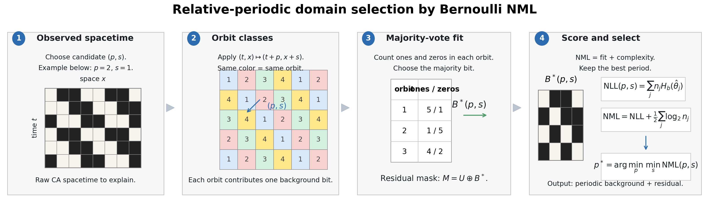
scripts/alife/alife_algorithm_figure.py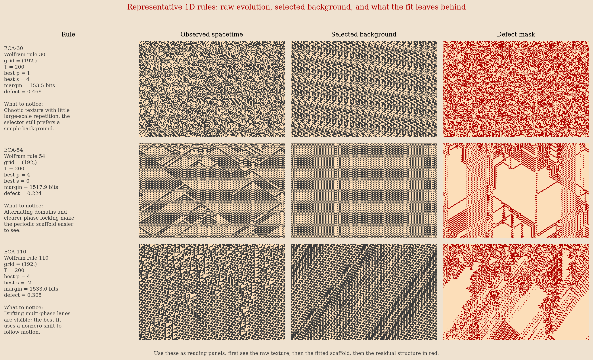
scripts/alife/alife_rule_diagrams.py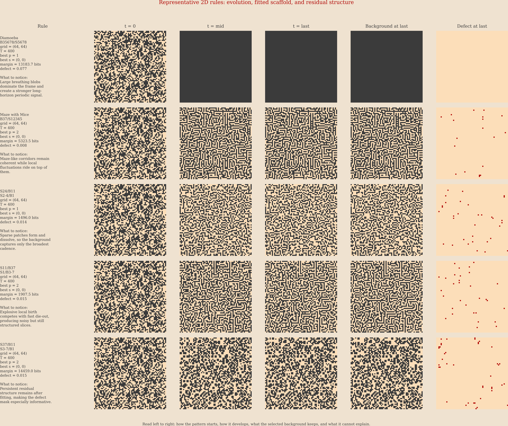
scripts/alife/alife_rule_diagrams.py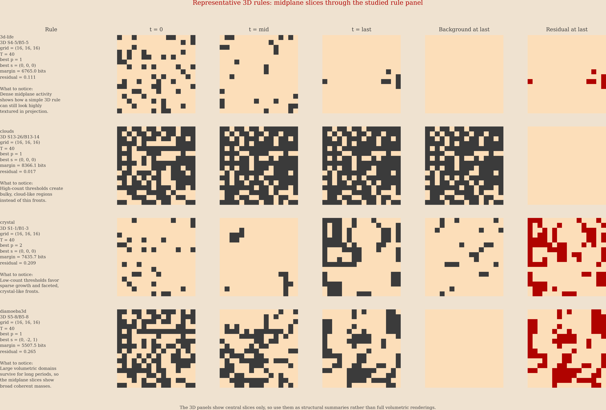
scripts/alife/alife_rule_diagrams.py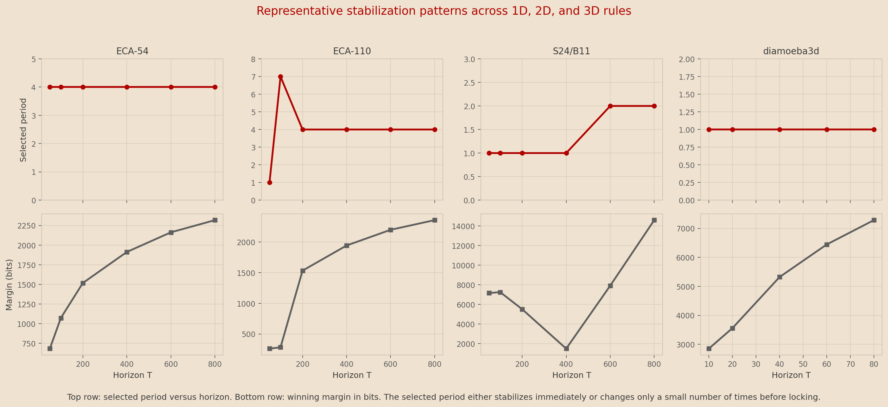
scripts/alife/alife_stabilization_summary.py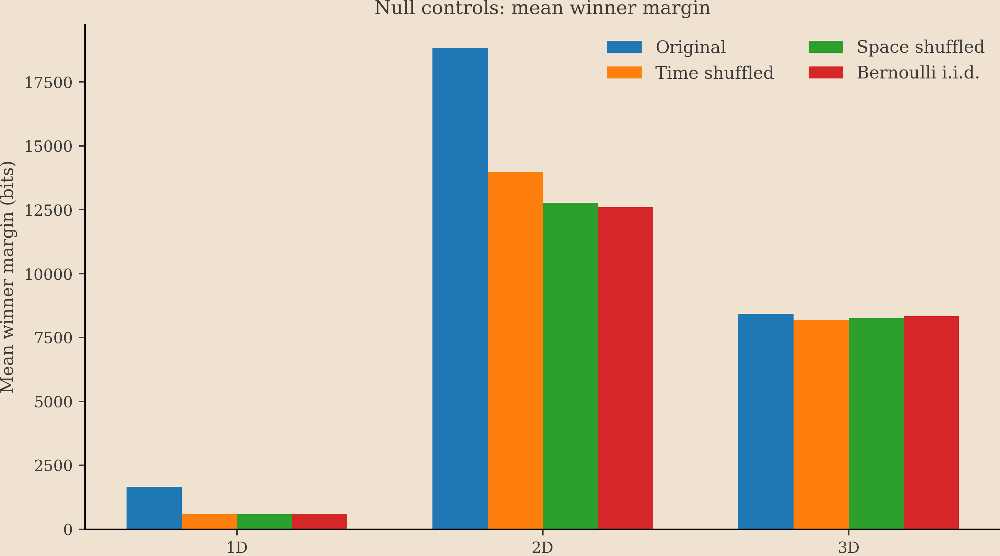
scripts/alife/alife_run_all.py (null_controls)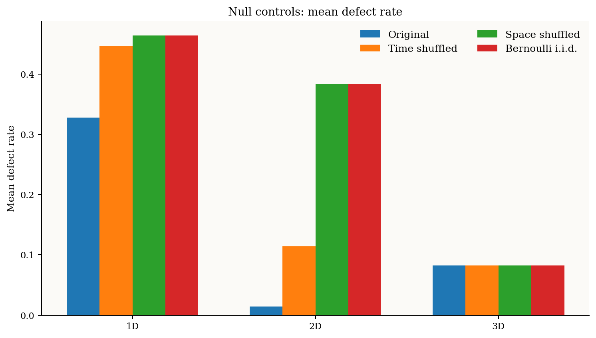
scripts/alife/alife_run_all.py (null_controls)
scripts/alife/alife_run_all.py (eca_atlas)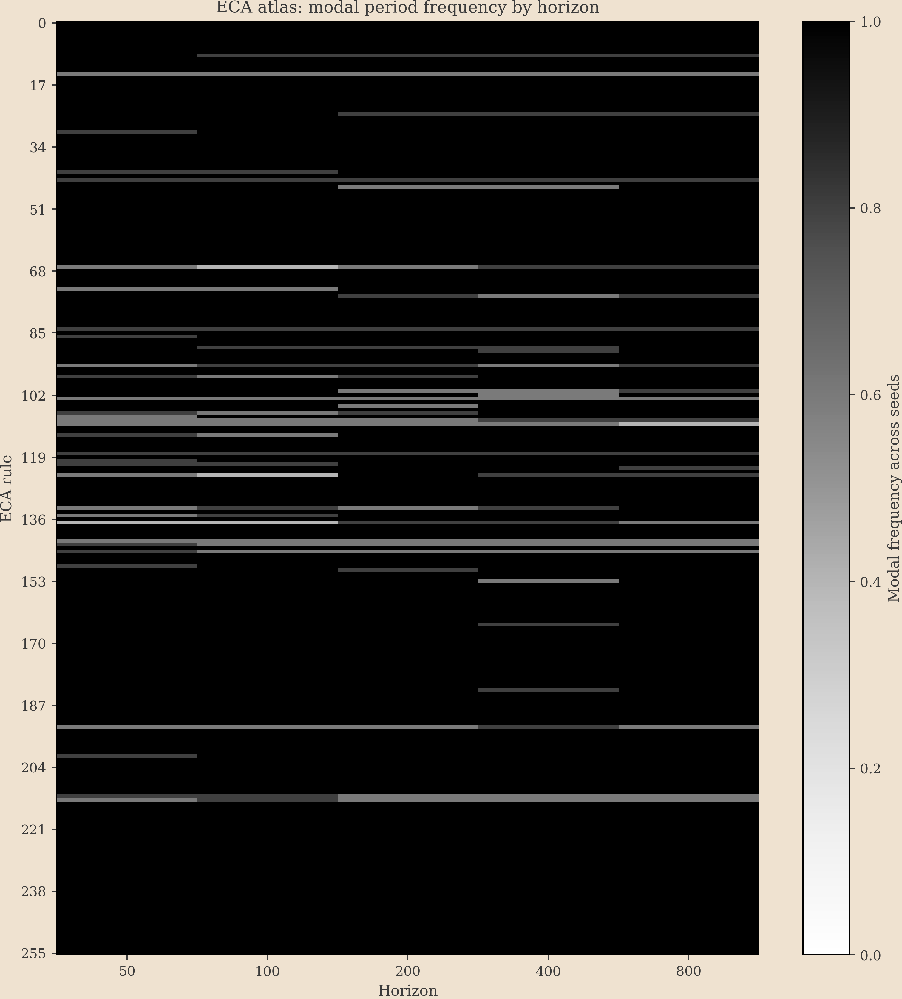
scripts/alife/alife_run_all.py (eca_atlas)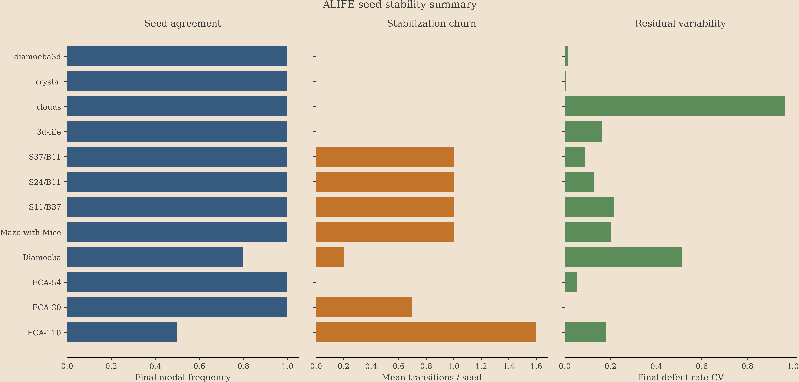
scripts/alife/alife_run_all.py (seed_stability)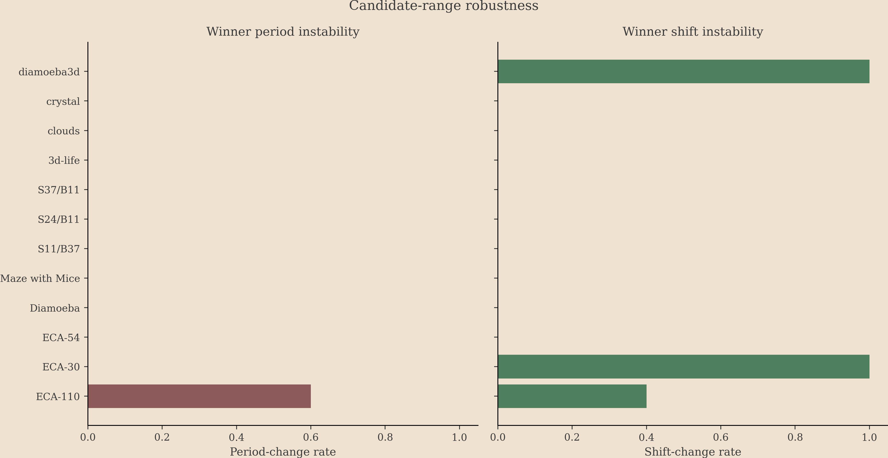
scripts/alife/alife_run_all.py (candidate_range_robustness)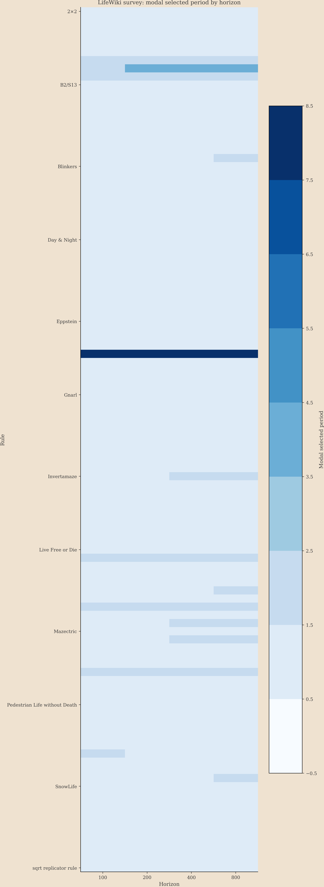
scripts/alife/alife_run_all.py (lifewiki_horizon_sweep)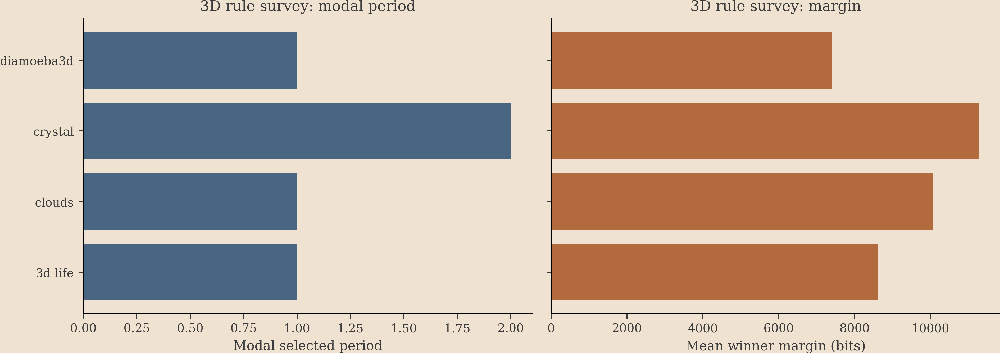
scripts/alife/alife_run_all.py (survey_3d)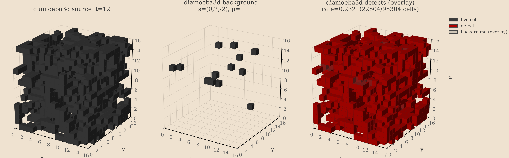
scripts/alife/alife_rule_diagrams.pyResults & robustness
Each table below is loaded from the CSVs in outputs/alife_2026/ —
the same files the paper's tables are built from. Click a column header to sort.
Counterexample stress report
The pipeline actively looks for its own failure modes: non-unique winners, razor-thin margins, candidate-range instability, and false positives on null controls. Observed counts:
Null controls (summary)
Supports: Selector does not hallucinate structure in noise
Original spacetimes vs. shuffled/Bernoulli controls, same selector. Large margins and low defect rates for originals — and not for controls — indicate the method detects real structure. No null-control false positives were observed.
| dimension | control_type | control_label | runs | mean_selected_period | median_selected_period | mean_margin_bits | median_margin_bits | mean_defect_rate | median_defect_rate | stable_winner_fraction | nonunique_period_fraction | nonunique_shift_fraction |
|---|---|---|---|---|---|---|---|---|---|---|---|---|
| 1 | bernoulli_iid | Bernoulli i.i.d. | 3 | 1 | 1 | 597.7 | 601 | 0.4644 | 0.479 | 1 | 0 | 0 |
| 1 | original | Original | 3 | 3 | 4 | 1662 | 2319 | 0.3277 | 0.2954 | 1 | 0 | 0 |
| 1 | space_shuffled | Space shuffled | 3 | 1 | 1 | 583.5 | 590.7 | 0.4643 | 0.4802 | 1 | 0 | 0 |
| 1 | time_shuffled | Time shuffled | 3 | 1 | 1 | 582 | 569.1 | 0.447 | 0.4806 | 1 | 0 | 0 |
| 2 | bernoulli_iid | Bernoulli i.i.d. | 5 | 1 | 1 | 1.26e+04 | 1.263e+04 | 0.3838 | 0.4749 | 1 | 0 | 0 |
| 2 | original | Original | 5 | 2.2 | 2 | 1.882e+04 | 1.613e+04 | 0.01407 | 0.007324 | 1 | 0 | 0 |
| 2 | space_shuffled | Space shuffled | 5 | 1 | 1 | 1.277e+04 | 1.263e+04 | 0.3838 | 0.4749 | 1 | 0 | 0 |
| 2 | time_shuffled | Time shuffled | 5 | 1 | 1 | 1.397e+04 | 1.406e+04 | 0.1142 | 0.02253 | 1 | 0 | 0 |
| 3 | bernoulli_iid | Bernoulli i.i.d. | 4 | 1 | 1 | 8329 | 8427 | 0.08248 | 0.01693 | 1 | 0 | 0 |
| 3 | original | Original | 4 | 1 | 1 | 8426 | 8712 | 0.08262 | 0.01699 | 1 | 0 | 0.5 |
| 3 | space_shuffled | Space shuffled | 4 | 1 | 1 | 8260 | 8351 | 0.08262 | 0.01699 | 1 | 0 | 0.5 |
| 3 | time_shuffled | Time shuffled | 4 | 1 | 1 | 8191 | 8283 | 0.08262 | 0.01699 | 1 | 0 | 0.5 |
Seed stability (summary)
Supports: Selection is stable across random initial conditions
Per-rule agreement of the final selected period across 10 seeds, with transition counts and defect-rate coefficient of variation.
| rule | dimension | n_seeds | n_horizons | final_horizon | final_modal_period | final_modal_period_frequency | mean_transitions_per_seed | max_transitions_per_seed | mean_margin_bits | median_margin_bits | final_mean_margin_bits | final_median_margin_bits | final_defect_rate_cv | nonunique_final_fraction |
|---|---|---|---|---|---|---|---|---|---|---|---|---|---|---|
| ECA-110 | 1 | 10 | 6 | 800 | 7 | 0.5 | 1.6 | 4 | 1813 | 954.2 | 3763 | 2296 | 0.1791 | 0 |
| ECA-30 | 1 | 10 | 6 | 800 | 1 | 1 | 0.7 | 1 | 202.3 | 204.1 | 297 | 305.9 | 0.001612 | 0 |
| ECA-54 | 1 | 10 | 6 | 800 | 4 | 1 | 0 | 0 | 1492 | 1516 | 2275 | 2313 | 0.055 | 0 |
| Diamoeba | 2 | 10 | 6 | 800 | 1 | 0.8 | 0.2 | 1 | 9095 | 9163 | 1.538e+04 | 1.334e+04 | 0.5123 | 0 |
| Maze with Mice | 2 | 10 | 6 | 800 | 2 | 1 | 1 | 1 | 9863 | 6701 | 2.228e+04 | 2.19e+04 | 0.2037 | 0 |
| S11/B37 | 2 | 10 | 6 | 800 | 4 | 1 | 1 | 1 | 1.079e+04 | 1.16e+04 | 1.914e+04 | 2.016e+04 | 0.2128 | 0 |
| S24/B11 | 2 | 10 | 6 | 800 | 2 | 1 | 1 | 1 | 9219 | 6613 | 1.745e+04 | 1.865e+04 | 0.127 | 0 |
| S37/B11 | 2 | 10 | 6 | 800 | 2 | 1 | 1 | 1 | 1.16e+04 | 7806 | 1.757e+04 | 1.822e+04 | 0.08614 | 0 |
| 3d-life | 3 | 10 | 5 | 80 | 1 | 1 | 0 | 0 | 6178 | 6635 | 8594 | 8590 | 0.1613 | 0 |
| clouds | 3 | 10 | 5 | 80 | 1 | 1 | 0 | 0 | 7784 | 8183 | 1.008e+04 | 1.006e+04 | 0.9656 | 0 |
| crystal | 3 | 10 | 5 | 80 | 2 | 1 | 0 | 0 | 6201 | 7096 | 1.124e+04 | 1.124e+04 | 0.004162 | 0 |
| diamoeba3d | 3 | 10 | 5 | 80 | 1 | 1 | 0 | 0 | 5015 | 5520 | 7399 | 7376 | 0.01498 | 0 |
Candidate-range robustness (summary)
Supports: Results are not an artifact of the scanned candidate range
Whether the selected period/shift changes when the scanned candidate grid is shrunk or enlarged.
| rule | dimension | n_seeds | period_change_rate | shift_change_rate | mean_margin_bits_default_3d | modal_period_default_3d | modal_period_frequency_default_3d | mean_margin_bits_large | modal_period_large | modal_period_frequency_large | mean_margin_bits_small | modal_period_small | modal_period_frequency_small | mean_margin_bits_default_2d | modal_period_default_2d | modal_period_frequency_default_2d | mean_margin_bits_default_1d | modal_period_default_1d | modal_period_frequency_default_1d |
|---|---|---|---|---|---|---|---|---|---|---|---|---|---|---|---|---|---|---|---|
| ECA-110 | 1 | 5 | 0.6 | 0.4 | 2636 | 4 | 0.4 | 1.208e+04 | 4 | 0.8 | 4988 | 4 | 0.4 | ||||||
| ECA-30 | 1 | 5 | 0 | 1 | 345.5 | 1 | 1 | 333.1 | 1 | 1 | 345.1 | 1 | 1 | ||||||
| ECA-54 | 1 | 5 | 0 | 0 | 2258 | 4 | 1 | 7565 | 4 | 1 | 2258 | 4 | 1 | ||||||
| Diamoeba | 2 | 5 | 0 | 0 | 1.553e+04 | 1 | 0.8 | 1.553e+04 | 1 | 0.8 | 1.553e+04 | 1 | 0.8 | ||||||
| Maze with Mice | 2 | 5 | 0 | 0 | 2.178e+04 | 2 | 1 | 2.178e+04 | 2 | 1 | 2.178e+04 | 2 | 1 | ||||||
| S11/B37 | 2 | 5 | 0 | 0 | 1.958e+04 | 4 | 1 | 1.958e+04 | 4 | 1 | 1.958e+04 | 4 | 1 | ||||||
| S24/B11 | 2 | 5 | 0 | 0 | 1.663e+04 | 2 | 1 | 1.663e+04 | 2 | 1 | 1.663e+04 | 2 | 1 | ||||||
| S37/B11 | 2 | 5 | 0 | 0 | 1.993e+04 | 2 | 1 | 1.993e+04 | 2 | 1 | 1.993e+04 | 2 | 1 | ||||||
| 3d-life | 3 | 5 | 0 | 0 | 8615 | 1 | 1 | 8615 | 1 | 1 | 8615 | 1 | 1 | ||||||
| clouds | 3 | 5 | 0 | 0 | 1.007e+04 | 1 | 1 | 1.007e+04 | 1 | 1 | 1.007e+04 | 1 | 1 | ||||||
| crystal | 3 | 5 | 0 | 0 | 1.127e+04 | 2 | 1 | 1.127e+04 | 2 | 1 | 1.691e+04 | 2 | 1 | ||||||
| diamoeba3d | 3 | 5 | 0 | 1 | 7402 | 1 | 1 | 7402 | 1 | 1 | 7336 | 1 | 1 |
3D survey (summary)
Supports: The pipeline generalizes beyond 1D/2D
Selected periods and margins for the 3D rules.
| rule | dimension | n_seeds | horizon | modal_period | modal_period_frequency | mean_margin_bits | mean_defect_rate | nonunique_fraction |
|---|---|---|---|---|---|---|---|---|
| 3d-life | 3 | 5 | 80 | 1 | 1 | 8615 | 0.06789 | 0 |
| clouds | 3 | 5 | 80 | 1 | 1 | 1.007e+04 | 0.1235 | 0 |
| crystal | 3 | 5 | 80 | 2 | 1 | 1.127e+04 | 0.2107 | 0 |
| diamoeba3d | 3 | 5 | 80 | 1 | 1 | 7402 | 0.2975 | 0 |
ECA atlas (all 256 rules)
— Full 1D coverage, not cherry-picked examples
Final modal period, stability, margins, and defect rate for every elementary CA rule. Use the filter box to find a rule.
| rule | rule_number | final_modal_period | final_modal_period_frequency | mean_transitions_per_seed | mean_margin_bits | final_mean_margin_bits | final_mean_defect_rate |
|---|---|---|---|---|---|---|---|
| ECA-0 | 0 | 1 | 1 | 0 | 526.4 | 698.3 | 0.000638 |
| ECA-1 | 1 | 2 | 1 | 0 | 1026 | 1390 | 0.0003398 |
| ECA-2 | 2 | 1 | 1 | 0 | 549.7 | 721.5 | 0.000487 |
| ECA-3 | 3 | 2 | 1 | 0 | 1053 | 1416 | 0.000168 |
| ECA-4 | 4 | 1 | 1 | 0 | 550.1 | 721.9 | 0.0004844 |
| ECA-5 | 5 | 2 | 1 | 0 | 1054 | 1417 | 0.0001628 |
| ECA-6 | 6 | 2 | 1 | 0 | 984.7 | 1348 | 0.001173 |
| ECA-7 | 7 | 2 | 1 | 0 | 976 | 1340 | 0.0007513 |
| ECA-8 | 8 | 1 | 1 | 0 | 551.9 | 723.7 | 0.0008034 |
| ECA-9 | 9 | 2 | 0.8 | 0.2 | 1019 | 1438 | 0.0144 |
| ECA-10 | 10 | 1 | 1 | 0 | 575.3 | 746.9 | 0.0003216 |
| ECA-11 | 11 | 2 | 1 | 0 | 1005 | 1369 | 0.00165 |
| ECA-12 | 12 | 1 | 1 | 0 | 575.7 | 747.3 | 0.000319 |
| ECA-13 | 13 | 1 | 1 | 0 | 523.9 | 696.1 | 0.0007266 |
| ECA-14 | 14 | 1 | 0.6 | 0.2 | 649.1 | 889.3 | 0.02595 |
| ECA-15 | 15 | 2 | 1 | 0 | 1079 | 1442 | 0 |
| ECA-16 | 16 | 1 | 1 | 0 | 549.7 | 721.5 | 0.000487 |
| ECA-17 | 17 | 2 | 1 | 0 | 1053 | 1416 | 0.000168 |
| ECA-18 | 18 | 2 | 1 | 0 | 855.8 | 1191 | 0.2502 |
| ECA-19 | 19 | 2 | 1 | 0 | 1042 | 1405 | 0.0002383 |
| ECA-20 | 20 | 2 | 1 | 0 | 977.3 | 1341 | 0.001212 |
| ECA-21 | 21 | 2 | 1 | 0 | 970.3 | 1334 | 0.0007982 |
| ECA-22 | 22 | 1 | 1 | 0 | 336.2 | 495.5 | 0.3494 |
| ECA-23 | 23 | 2 | 1 | 0 | 1033 | 1397 | 0.0003555 |
| ECA-24 | 24 | 1 | 1 | 0 | 524.2 | 696.1 | 0.0007409 |
| ECA-25 | 25 | 2 | 0.8 | 0.2 | 1115 | 1634 | 0.02076 |
| ECA-26 | 26 | 4 | 1 | 0 | 7003 | 1.962e+04 | 0.02511 |
| ECA-27 | 27 | 2 | 1 | 0 | 1044 | 1408 | 0.0002747 |
| ECA-28 | 28 | 2 | 1 | 0 | 992 | 1362 | 0.0008854 |
| ECA-29 | 29 | 2 | 1 | 0 | 1053 | 1416 | 0.0001693 |
| ECA-30 | 30 | 1 | 1 | 0.8 | 186.6 | 345.1 | 0.4841 |
| ECA-31 | 31 | 2 | 1 | 0 | 961.9 | 1326 | 0.0008594 |
| ECA-32 | 32 | 1 | 1 | 0 | 551.1 | 722.9 | 0.0008763 |
| ECA-33 | 33 | 2 | 1 | 0 | 985.4 | 1349 | 0.0007708 |
| ECA-34 | 34 | 1 | 1 | 0 | 575.7 | 747.3 | 0.000319 |
| ECA-35 | 35 | 2 | 1 | 0 | 1007 | 1371 | 0.001635 |
| ECA-36 | 36 | 1 | 1 | 0 | 524.2 | 696.1 | 0.0008893 |
| ECA-37 | 37 | 2 | 1 | 0 | 936.8 | 1302 | 0.003318 |
| ECA-38 | 38 | 2 | 1 | 0 | 1015 | 1378 | 0.0004154 |
| ECA-39 | 39 | 2 | 1 | 0 | 1045 | 1408 | 0.0002474 |
| ECA-40 | 40 | 1 | 1 | 0 | 573.9 | 745.6 | 0.001342 |
| ECA-41 | 41 | 4 | 1 | 0.8 | 4827 | 1.749e+04 | 0.1441 |
| ECA-42 | 42 | 1 | 1 | 0 | 601.2 | 772.7 | 0.0001536 |
| ECA-43 | 43 | 1 | 0.8 | 0 | 652.3 | 864.5 | 0.02538 |
| ECA-44 | 44 | 1 | 1 | 0 | 554.6 | 726.3 | 0.0009232 |
| ECA-45 | 45 | 1 | 1 | 1.4 | 233.3 | 207.7 | 0.4846 |
| ECA-46 | 46 | 1 | 1 | 0 | 577.5 | 749.1 | 0.0005807 |
| ECA-47 | 47 | 2 | 1 | 0 | 1012 | 1375 | 0.001167 |
| ECA-48 | 48 | 1 | 1 | 0 | 575.7 | 747.3 | 0.000319 |
| ECA-49 | 49 | 2 | 1 | 0 | 1013 | 1377 | 0.001467 |
| ECA-50 | 50 | 2 | 1 | 0 | 1018 | 1381 | 0.0004323 |
| ECA-51 | 51 | 2 | 1 | 0 | 1079 | 1442 | 0 |
| ECA-52 | 52 | 2 | 1 | 0 | 1020 | 1383 | 0.0003841 |
| ECA-53 | 53 | 2 | 1 | 0 | 1042 | 1405 | 0.000276 |
| ECA-54 | 54 | 4 | 1 | 0 | 1411 | 2258 | 0.3138 |
| ECA-55 | 55 | 2 | 1 | 0 | 1042 | 1406 | 0.000237 |
| ECA-56 | 56 | 1 | 1 | 0 | 555.8 | 727.6 | 0.001391 |
| ECA-57 | 57 | 1 | 1 | 0 | 583.4 | 757.6 | 0.02399 |
| ECA-58 | 58 | 1 | 1 | 0 | 588.3 | 760 | 0.003585 |
| ECA-59 | 59 | 2 | 1 | 0 | 1018 | 1381 | 0.001492 |
| ECA-60 | 60 | 4 | 1 | 1 | 560.6 | 1655 | 0.4079 |
| ECA-61 | 61 | 2 | 1 | 0 | 982.8 | 1352 | 0.01758 |
| ECA-62 | 62 | 3 | 1 | 0 | 1392 | 1950 | 0.06779 |
| ECA-63 | 63 | 2 | 1 | 0 | 1055 | 1418 | 0.0001536 |
| ECA-64 | 64 | 1 | 1 | 0 | 551.9 | 723.7 | 0.0008034 |
| ECA-65 | 65 | 2 | 1 | 0 | 980.3 | 1347 | 0.01442 |
| ECA-66 | 66 | 1 | 1 | 0 | 524.2 | 696.1 | 0.0007513 |
| ECA-67 | 67 | 2 | 0.8 | 1.2 | 1035 | 1474 | 0.03141 |
| ECA-68 | 68 | 1 | 1 | 0 | 575.7 | 747.3 | 0.000319 |
| ECA-69 | 69 | 1 | 1 | 0 | 525.9 | 698.1 | 0.0007083 |
| ECA-70 | 70 | 2 | 1 | 0 | 993 | 1365 | 0.0008789 |
| ECA-71 | 71 | 2 | 1 | 0 | 1056 | 1419 | 0.0001484 |
| ECA-72 | 72 | 1 | 1 | 0 | 577.5 | 749.1 | 0.0005833 |
| ECA-73 | 73 | 6 | 1 | 1 | 3431 | 1.015e+04 | 0.04485 |
| ECA-74 | 74 | 2 | 1 | 0 | 970.5 | 1334 | 0.00112 |
| ECA-75 | 75 | 1 | 0.8 | 0.8 | 278.4 | 228.1 | 0.4763 |
| ECA-76 | 76 | 1 | 1 | 0 | 601.2 | 772.7 | 0.0001536 |
| ECA-77 | 77 | 1 | 1 | 0 | 576.4 | 748.1 | 0.0003138 |
| ECA-78 | 78 | 1 | 1 | 0 | 592.8 | 764.3 | 0.0009479 |
| ECA-79 | 79 | 1 | 1 | 0 | 528.3 | 700.4 | 0.0006823 |
| ECA-80 | 80 | 1 | 1 | 0 | 575.3 | 746.9 | 0.0003216 |
| ECA-81 | 81 | 2 | 1 | 0 | 1010 | 1373 | 0.001491 |
| ECA-82 | 82 | 4 | 1 | 0 | 6663 | 1.867e+04 | 0.02534 |
| ECA-83 | 83 | 2 | 1 | 0 | 1048 | 1411 | 0.0002214 |
| ECA-84 | 84 | 2 | 0.8 | 0 | 769.7 | 930.1 | 0.02562 |
| ECA-85 | 85 | 2 | 1 | 0 | 1079 | 1442 | 0 |
| ECA-86 | 86 | 1 | 1 | 0.8 | 211.1 | 384.6 | 0.4844 |
| ECA-87 | 87 | 2 | 1 | 0 | 972.3 | 1336 | 0.0007669 |
| ECA-88 | 88 | 2 | 1 | 0 | 979.2 | 1343 | 0.001126 |
| ECA-89 | 89 | 1 | 1 | 1 | 230.9 | 226.5 | 0.4841 |
| ECA-90 | 90 | 8 | 1 | 2 | 715.5 | 2616 | 0.3697 |
| ECA-91 | 91 | 2 | 1 | 0 | 946.9 | 1311 | 0.0034 |
| ECA-92 | 92 | 1 | 1 | 0 | 591 | 762.6 | 0.0009687 |
| ECA-93 | 93 | 1 | 1 | 0 | 526.3 | 698.5 | 0.0007031 |
| ECA-94 | 94 | 6 | 0.8 | 1.2 | 695.1 | 1279 | 0.001637 |
| ECA-95 | 95 | 2 | 1 | 0 | 1055 | 1418 | 0.0001549 |
| ECA-96 | 96 | 1 | 1 | 0 | 574.1 | 745.8 | 0.00137 |
| ECA-97 | 97 | 4 | 1 | 0.8 | 4975 | 1.738e+04 | 0.1478 |
| ECA-98 | 98 | 1 | 1 | 0 | 557.9 | 729.6 | 0.001427 |
| ECA-99 | 99 | 1 | 1 | 0 | 585 | 759.1 | 0.01801 |
| ECA-100 | 100 | 1 | 1 | 0 | 554.3 | 726 | 0.0009453 |
| ECA-101 | 101 | 1 | 0.8 | 0.8 | 226.3 | 223.3 | 0.4774 |
| ECA-102 | 102 | 4 | 1 | 1 | 587.4 | 1752 | 0.4073 |
| ECA-103 | 103 | 2 | 0.6 | 0 | 1123 | 1562 | 0.01529 |
| ECA-104 | 104 | 1 | 1 | 0 | 553.5 | 725.5 | 0.001486 |
| ECA-105 | 105 | 8 | 1 | 1.2 | 3345 | 1.22e+04 | 0.3246 |
| ECA-106 | 106 | 1 | 1 | 0 | 216 | 343.4 | 0.4409 |
| ECA-107 | 107 | 4 | 1 | 0.8 | 4878 | 1.734e+04 | 0.1529 |
| ECA-108 | 108 | 2 | 1 | 0.6 | 756.5 | 1357 | 0.0005508 |
| ECA-109 | 109 | 6 | 0.8 | 1.2 | 2901 | 9006 | 0.05637 |
| ECA-110 | 110 | 4 | 0.4 | 1.6 | 2101 | 4988 | 0.2835 |
| ECA-111 | 111 | 2 | 1 | 0 | 980.6 | 1346 | 0.006936 |
| ECA-112 | 112 | 1 | 1 | 0 | 601.2 | 772.7 | 0.0001536 |
| ECA-113 | 113 | 1 | 1 | 0.6 | 449.1 | 593 | 0.02542 |
| ECA-114 | 114 | 1 | 1 | 0 | 588.8 | 760.6 | 0.003365 |
| ECA-115 | 115 | 2 | 1 | 0 | 1012 | 1376 | 0.001533 |
| ECA-116 | 116 | 1 | 1 | 0 | 577.5 | 749.1 | 0.0005391 |
| ECA-117 | 117 | 2 | 1 | 0 | 1004 | 1367 | 0.001491 |
| ECA-118 | 118 | 3 | 0.8 | 0 | 1287 | 1830 | 0.06645 |
| ECA-119 | 119 | 2 | 1 | 0 | 1055 | 1418 | 0.0001536 |
| ECA-120 | 120 | 1 | 1 | 0.2 | 220.1 | 405.4 | 0.4403 |
| ECA-121 | 121 | 4 | 1 | 0.8 | 5999 | 2.099e+04 | 0.1057 |
| ECA-122 | 122 | 1 | 0.8 | 0.2 | 468.7 | 607.7 | 0.473 |
| ECA-123 | 123 | 2 | 1 | 0 | 989.1 | 1353 | 0.0007214 |
| ECA-124 | 124 | 7 | 0.8 | 1.6 | 1614 | 2706 | 0.3264 |
| ECA-125 | 125 | 2 | 1 | 0 | 988.2 | 1354 | 0.007797 |
| ECA-126 | 126 | 1 | 1 | 0 | 464.2 | 641.3 | 0.4835 |
| ECA-127 | 127 | 2 | 1 | 0 | 1025 | 1389 | 0.0003464 |
| ECA-128 | 128 | 1 | 1 | 0 | 548.8 | 720.6 | 0.0008477 |
| ECA-129 | 129 | 1 | 1 | 0 | 461.8 | 640.7 | 0.4835 |
| ECA-130 | 130 | 1 | 1 | 0 | 572.6 | 744.2 | 0.0005846 |
| ECA-131 | 131 | 3 | 1 | 0 | 1373 | 1920 | 0.02896 |
| ECA-132 | 132 | 1 | 1 | 0 | 573.1 | 744.8 | 0.0005911 |
| ECA-133 | 133 | 6 | 1 | 1.4 | 1068 | 3182 | 0.00148 |
| ECA-134 | 134 | 2 | 1 | 0 | 974.6 | 1338 | 0.002124 |
| ECA-135 | 135 | 1 | 1 | 0.8 | 163.2 | 312.5 | 0.4839 |
| ECA-136 | 136 | 1 | 1 | 0 | 572.4 | 744.1 | 0.001279 |
| ECA-137 | 137 | 7 | 0.6 | 1.2 | 2281 | 5904 | 0.3155 |
| ECA-138 | 138 | 1 | 1 | 0 | 599 | 770.5 | 0.000168 |
| ECA-139 | 139 | 1 | 1 | 0 | 577.1 | 748.7 | 0.000526 |
| ECA-140 | 140 | 1 | 1 | 0 | 597.5 | 769 | 0.0006406 |
| ECA-141 | 141 | 1 | 1 | 0 | 591.3 | 762.9 | 0.001 |
| ECA-142 | 142 | 1 | 0.6 | 0.2 | 648.7 | 876.7 | 0.02542 |
| ECA-143 | 143 | 1 | 0.6 | 0.4 | 656.4 | 859.8 | 0.02551 |
| ECA-144 | 144 | 1 | 1 | 0 | 572.7 | 744.4 | 0.0005664 |
| ECA-145 | 145 | 3 | 0.6 | 0.2 | 1171 | 1595 | 0.06055 |
| ECA-146 | 146 | 2 | 1 | 0 | 860.3 | 1235 | 0.2526 |
| ECA-147 | 147 | 4 | 1 | 0 | 1393 | 1807 | 0.3121 |
| ECA-148 | 148 | 2 | 1 | 0 | 970.3 | 1334 | 0.002211 |
| ECA-149 | 149 | 1 | 1 | 0.2 | 217.9 | 344.8 | 0.4839 |
| ECA-150 | 150 | 8 | 1 | 1 | 3355 | 1.22e+04 | 0.3246 |
| ECA-151 | 151 | 1 | 1 | 0 | 357.2 | 531.6 | 0.3523 |
| ECA-152 | 152 | 1 | 1 | 0 | 546.6 | 718.4 | 0.001228 |
| ECA-153 | 153 | 4 | 1 | 1 | 590.1 | 1760 | 0.4073 |
| ECA-154 | 154 | 4 | 1 | 0 | 4989 | 1.422e+04 | 0.01589 |
| ECA-155 | 155 | 2 | 1 | 0 | 1021 | 1385 | 0.0003724 |
| ECA-156 | 156 | 2 | 1 | 0 | 986 | 1358 | 0.0008568 |
| ECA-157 | 157 | 2 | 1 | 0 | 991.9 | 1362 | 0.0008646 |
| ECA-158 | 158 | 2 | 1 | 0 | 972.8 | 1337 | 0.002559 |
| ECA-159 | 159 | 2 | 1 | 0 | 982 | 1346 | 0.001539 |
| ECA-160 | 160 | 1 | 1 | 0 | 572.4 | 744.1 | 0.001246 |
| ECA-161 | 161 | 1 | 1 | 0 | 467.3 | 637.3 | 0.4838 |
| ECA-162 | 162 | 1 | 1 | 0 | 599 | 770.6 | 0.0002956 |
| ECA-163 | 163 | 1 | 1 | 0 | 588.3 | 760.1 | 0.003578 |
| ECA-164 | 164 | 1 | 1 | 0 | 548.7 | 720.7 | 0.001436 |
| ECA-165 | 165 | 8 | 1 | 2 | 717.9 | 2615 | 0.3698 |
| ECA-166 | 166 | 4 | 1 | 0 | 5272 | 1.495e+04 | 0.01693 |
| ECA-167 | 167 | 4 | 1 | 0 | 6242 | 1.76e+04 | 0.02314 |
| ECA-168 | 168 | 1 | 1 | 0 | 596 | 767.7 | 0.002514 |
| ECA-169 | 169 | 1 | 1 | 0 | 250.2 | 429.1 | 0.4425 |
| ECA-170 | 170 | 1 | 1 | 0 | 625 | 796.4 | 0 |
| ECA-171 | 171 | 1 | 1 | 0 | 603 | 774.5 | 0.0001419 |
| ECA-172 | 172 | 1 | 1 | 0 | 605.6 | 777.3 | 0.003003 |
| ECA-173 | 173 | 2 | 1 | 0 | 984.8 | 1348 | 0.001099 |
| ECA-174 | 174 | 1 | 1 | 0 | 601.2 | 772.7 | 0.0001536 |
| ECA-175 | 175 | 1 | 1 | 0 | 579.3 | 750.9 | 0.0002956 |
| ECA-176 | 176 | 1 | 1 | 0 | 599 | 770.6 | 0.0002956 |
| ECA-177 | 177 | 1 | 1 | 0 | 586.3 | 758.1 | 0.00375 |
| ECA-178 | 178 | 2 | 1 | 0 | 1036 | 1399 | 0.0003138 |
| ECA-179 | 179 | 2 | 1 | 0 | 1019 | 1382 | 0.0004245 |
| ECA-180 | 180 | 4 | 1 | 0 | 5065 | 1.441e+04 | 0.01445 |
| ECA-181 | 181 | 4 | 1 | 0 | 6954 | 1.949e+04 | 0.02505 |
| ECA-182 | 182 | 2 | 1 | 0 | 790.7 | 903.6 | 0.2434 |
| ECA-183 | 183 | 2 | 1 | 0.4 | 830.4 | 1230 | 0.2513 |
| ECA-184 | 184 | 1 | 1 | 0 | 590.6 | 764.3 | 0.01981 |
| ECA-185 | 185 | 1 | 1 | 0 | 561.4 | 733.1 | 0.001236 |
| ECA-186 | 186 | 1 | 1 | 0 | 601.3 | 772.8 | 0.0002591 |
| ECA-187 | 187 | 1 | 1 | 0 | 579.7 | 751.3 | 0.000293 |
| ECA-188 | 188 | 1 | 1 | 0 | 555.5 | 727.3 | 0.001107 |
| ECA-189 | 189 | 1 | 1 | 0 | 532.6 | 704.5 | 0.0006784 |
| ECA-190 | 190 | 1 | 1 | 0 | 577.4 | 749 | 0.0005156 |
| ECA-191 | 191 | 1 | 1 | 0 | 556 | 727.7 | 0.0004466 |
| ECA-192 | 192 | 1 | 1 | 0 | 572.4 | 744.1 | 0.001279 |
| ECA-193 | 193 | 4 | 0.6 | 1.8 | 1352 | 2943 | 0.3266 |
| ECA-194 | 194 | 1 | 1 | 0 | 546.6 | 718.4 | 0.001186 |
| ECA-195 | 195 | 4 | 1 | 1 | 562.5 | 1654 | 0.408 |
| ECA-196 | 196 | 1 | 1 | 0 | 597.5 | 769 | 0.0006406 |
| ECA-197 | 197 | 1 | 1 | 0 | 592 | 763.6 | 0.0009818 |
| ECA-198 | 198 | 2 | 1 | 0 | 987.1 | 1361 | 0.0008464 |
| ECA-199 | 199 | 2 | 1 | 0 | 993.8 | 1366 | 0.0008737 |
| ECA-200 | 200 | 1 | 1 | 0 | 601.2 | 772.7 | 0.0001536 |
| ECA-201 | 201 | 2 | 1 | 0.2 | 821.6 | 1371 | 0.0004635 |
| ECA-202 | 202 | 1 | 1 | 0 | 607.2 | 778.9 | 0.00253 |
| ECA-203 | 203 | 1 | 1 | 0 | 558.3 | 730.1 | 0.0008424 |
| ECA-204 | 204 | 1 | 1 | 0 | 625 | 796.4 | 0 |
| ECA-205 | 205 | 1 | 1 | 0 | 603 | 774.5 | 0.0001419 |
| ECA-206 | 206 | 1 | 1 | 0 | 599.9 | 771.5 | 0.0005768 |
| ECA-207 | 207 | 1 | 1 | 0 | 579.7 | 751.3 | 0.000293 |
| ECA-208 | 208 | 1 | 1 | 0 | 599 | 770.5 | 0.000168 |
| ECA-209 | 209 | 1 | 1 | 0 | 577.1 | 748.7 | 0.0005677 |
| ECA-210 | 210 | 4 | 1 | 0 | 5164 | 1.467e+04 | 0.01432 |
| ECA-211 | 211 | 2 | 1 | 0 | 1017 | 1380 | 0.0004036 |
| ECA-212 | 212 | 2 | 0.6 | 0.2 | 730 | 973.1 | 0.02538 |
| ECA-213 | 213 | 2 | 0.6 | 0.4 | 736.1 | 1021 | 0.02574 |
| ECA-214 | 214 | 2 | 1 | 0 | 977.1 | 1341 | 0.001947 |
| ECA-215 | 215 | 2 | 1 | 0 | 984.9 | 1348 | 0.001057 |
| ECA-216 | 216 | 1 | 1 | 0 | 605.8 | 777.5 | 0.002514 |
| ECA-217 | 217 | 1 | 1 | 0 | 558.3 | 730 | 0.0008333 |
| ECA-218 | 218 | 1 | 1 | 0 | 554.2 | 726.1 | 0.001313 |
| ECA-219 | 219 | 1 | 1 | 0 | 532.6 | 704.5 | 0.0008503 |
| ECA-220 | 220 | 1 | 1 | 0 | 599.9 | 771.5 | 0.0005768 |
| ECA-221 | 221 | 1 | 1 | 0 | 579.7 | 751.3 | 0.000293 |
| ECA-222 | 222 | 1 | 1 | 0 | 577.6 | 749.2 | 0.0005182 |
| ECA-223 | 223 | 1 | 1 | 0 | 556.4 | 728.1 | 0.000444 |
| ECA-224 | 224 | 1 | 1 | 0 | 596 | 767.7 | 0.002514 |
| ECA-225 | 225 | 1 | 1 | 0 | 227.4 | 415.6 | 0.4423 |
| ECA-226 | 226 | 1 | 1 | 0 | 580.3 | 753.8 | 0.0123 |
| ECA-227 | 227 | 1 | 1 | 0 | 562 | 733.8 | 0.001113 |
| ECA-228 | 228 | 1 | 1 | 0 | 606 | 777.7 | 0.003035 |
| ECA-229 | 229 | 2 | 1 | 0 | 979.6 | 1345 | 0.0009284 |
| ECA-230 | 230 | 1 | 1 | 0 | 552.4 | 724.2 | 0.001133 |
| ECA-231 | 231 | 1 | 1 | 0 | 532.6 | 704.5 | 0.0007044 |
| ECA-232 | 232 | 1 | 1 | 0 | 570 | 741.7 | 0.0003555 |
| ECA-233 | 233 | 1 | 1 | 0 | 550.9 | 722.9 | 0.001303 |
| ECA-234 | 234 | 1 | 1 | 0 | 594 | 765.7 | 0.002156 |
| ECA-235 | 235 | 1 | 1 | 0 | 574.1 | 745.8 | 0.001184 |
| ECA-236 | 236 | 1 | 1 | 0 | 599 | 770.5 | 0.000168 |
| ECA-237 | 237 | 1 | 1 | 0 | 577.1 | 748.7 | 0.0005703 |
| ECA-238 | 238 | 1 | 1 | 0 | 572.5 | 744.2 | 0.001189 |
| ECA-239 | 239 | 1 | 1 | 0 | 553.8 | 725.5 | 0.000763 |
| ECA-240 | 240 | 1 | 1 | 0 | 625 | 796.4 | 0 |
| ECA-241 | 241 | 1 | 1 | 0 | 603 | 774.5 | 0.0001419 |
| ECA-242 | 242 | 1 | 1 | 0 | 601.3 | 772.8 | 0.0002591 |
| ECA-243 | 243 | 1 | 1 | 0 | 579.7 | 751.3 | 0.000293 |
| ECA-244 | 244 | 1 | 1 | 0 | 601.2 | 772.7 | 0.0001536 |
| ECA-245 | 245 | 1 | 1 | 0 | 579.3 | 750.9 | 0.0002956 |
| ECA-246 | 246 | 1 | 1 | 0 | 577 | 748.7 | 0.0005326 |
| ECA-247 | 247 | 1 | 1 | 0 | 556 | 727.7 | 0.0004466 |
| ECA-248 | 248 | 1 | 1 | 0 | 594 | 765.7 | 0.002156 |
| ECA-249 | 249 | 1 | 1 | 0 | 573.8 | 745.5 | 0.001194 |
| ECA-250 | 250 | 1 | 1 | 0 | 572.8 | 744.5 | 0.001167 |
| ECA-251 | 251 | 1 | 1 | 0 | 553.1 | 724.9 | 0.0008255 |
| ECA-252 | 252 | 1 | 1 | 0 | 572.5 | 744.2 | 0.001189 |
| ECA-253 | 253 | 1 | 1 | 0 | 553.8 | 725.5 | 0.000763 |
| ECA-254 | 254 | 1 | 1 | 0 | 551.1 | 722.9 | 0.0008008 |
| ECA-255 | 255 | 1 | 1 | 0 | 530.4 | 702.3 | 0.000612 |
LifeWiki horizon sweep (per rule)
— 2D survey coverage across the LifeWiki catalog
Final selected period and per-seed transition counts for each LifeWiki rule across horizons up to T=800.
| rule | dimension | n_seeds | final_horizon | final_modal_period | final_modal_period_frequency | mean_transitions_per_seed | max_transitions_per_seed | mean_margin_bits | final_mean_margin_bits |
|---|---|---|---|---|---|---|---|---|---|
| 2×2 | 2 | 5 | 800 | 1 | 1 | 0 | 0 | 1.243e+04 | 1.529e+04 |
| 2×2 2 | 2 | 5 | 800 | 1 | 1 | 0 | 0 | 1.239e+04 | 1.524e+04 |
| 3-4 Life | 2 | 5 | 800 | 1 | 1 | 0 | 0 | 1.132e+04 | 1.402e+04 |
| Amoeba | 2 | 5 | 800 | 1 | 1 | 0 | 0 | 1.161e+04 | 1.436e+04 |
| AntiLife | 2 | 5 | 800 | 1 | 1 | 0 | 0 | 1.048e+04 | 9347 |
| Assimilation | 2 | 5 | 800 | 1 | 0.8 | 0.2 | 1 | 8121 | 6630 |
| B01245/S01245 | 2 | 5 | 800 | 2 | 1 | 0 | 0 | 2.17e+04 | 2.793e+04 |
| B017/S01 | 2 | 5 | 800 | 4 | 0.8 | 1.2 | 2 | 7437 | 1.418e+04 |
| B026/S1 | 2 | 5 | 800 | 2 | 1 | 0 | 0 | 1.434e+04 | 1.189e+04 |
| B2/S13 | 2 | 5 | 800 | 1 | 1 | 0 | 0 | 1.201e+04 | 1.474e+04 |
| B2/S2345 | 2 | 5 | 800 | 1 | 0.8 | 0.2 | 1 | 8234 | 4905 |
| B2/S23456 | 2 | 5 | 800 | 1 | 1 | 0 | 0 | 9726 | 7695 |
| B2/S2345678 | 2 | 5 | 800 | 1 | 1 | 0 | 0 | 1.009e+04 | 8393 |
| B25/S4 | 2 | 5 | 800 | 1 | 1 | 0 | 0 | 1.103e+04 | 1.373e+04 |
| B3/S2 | 2 | 5 | 800 | 1 | 0.8 | 0.2 | 1 | 7547 | 5570 |
| B3/S2378 | 2 | 5 | 800 | 1 | 1 | 0 | 0 | 1.201e+04 | 1.333e+04 |
| B3678/S23 | 2 | 5 | 800 | 1 | 1 | 0 | 0 | 1.25e+04 | 1.482e+04 |
| B368/S12578 | 2 | 5 | 800 | 1 | 1 | 0 | 0 | 1.246e+04 | 1.524e+04 |
| Bacteria[6] | 2 | 5 | 800 | 2 | 1 | 1 | 1 | 7685 | 5783 |
| Blinkers | 2 | 5 | 800 | 1 | 0.8 | 0.2 | 1 | 7189 | 7479 |
| Bugs[6] | 2 | 5 | 800 | 1 | 1 | 0 | 0 | 1.092e+04 | 1.37e+04 |
| Castles | 2 | 5 | 800 | 1 | 1 | 0 | 0 | 1.309e+04 | 1.583e+04 |
| Cheerios | 2 | 5 | 800 | 1 | 1 | 0 | 0 | 1.104e+04 | 1.367e+04 |
| Coagulations | 2 | 5 | 800 | 1 | 1 | 0 | 0 | 1.323e+04 | 1.609e+04 |
| Conway's Life | 2 | 5 | 800 | 1 | 1 | 0 | 0 | 9382 | 7539 |
| Coral | 2 | 5 | 800 | 1 | 1 | 0 | 0 | 9011 | 4992 |
| Corrosion of Conformity | 2 | 5 | 800 | 1 | 1 | 0 | 0 | 1.259e+04 | 1.532e+04 |
| Dance | 2 | 5 | 800 | 1 | 1 | 0 | 0 | 1.111e+04 | 1.384e+04 |
| Day & Night | 2 | 5 | 800 | 1 | 1 | 0 | 0 | 1.225e+04 | 1.423e+04 |
| Diamoeba | 2 | 5 | 800 | 1 | 0.8 | 0.2 | 1 | 9177 | 1.553e+04 |
| DotLife | 2 | 5 | 800 | 1 | 1 | 0 | 0 | 1.287e+04 | 1.56e+04 |
| DrighLife | 2 | 5 | 800 | 1 | 1 | 0 | 0 | 1.258e+04 | 1.512e+04 |
| DryFlock | 2 | 5 | 800 | 1 | 1 | 0 | 0 | 1.126e+04 | 1.3e+04 |
| DryLife | 2 | 5 | 800 | 1 | 1 | 0 | 0 | 1.17e+04 | 1.257e+04 |
| DryLife without Death | 2 | 5 | 800 | 1 | 1 | 0 | 0 | 1.373e+04 | 1.645e+04 |
| EightFlock | 2 | 5 | 800 | 1 | 1 | 0 | 0 | 1.141e+04 | 1.331e+04 |
| EightLife | 2 | 5 | 800 | 1 | 1 | 0 | 0 | 1.154e+04 | 1.198e+04 |
| Electrified Maze | 2 | 5 | 800 | 1 | 1 | 0 | 0 | 1.264e+04 | 1.539e+04 |
| Eppstein | 2 | 5 | 800 | 1 | 1 | 0 | 0 | 1.18e+04 | 1.453e+04 |
| Feux | 2 | 5 | 800 | 1 | 1 | 0 | 0 | 1.111e+04 | 1.384e+04 |
| Flock | 2 | 5 | 800 | 1 | 1 | 0 | 0 | 1.14e+04 | 1.33e+04 |
| Forrest of Ls | 2 | 5 | 800 | 1 | 1 | 0 | 0 | 1.292e+04 | 1.573e+04 |
| Fredkin | 2 | 5 | 800 | 8 | 1 | 0 | 0 | 1.442e+05 | 3.441e+05 |
| Fuzz | 2 | 5 | 800 | 1 | 1 | 0 | 0 | 1.161e+04 | 1.233e+04 |
| Gems | 2 | 5 | 800 | 1 | 1 | 0 | 0 | 1.155e+04 | 1.429e+04 |
| Gems Minor | 2 | 5 | 800 | 1 | 1 | 0 | 0 | 1.121e+04 | 1.394e+04 |
| Geology | 2 | 5 | 800 | 1 | 1 | 0 | 0 | 1.182e+04 | 1.468e+04 |
| Gnarl | 2 | 5 | 800 | 1 | 1 | 0 | 0 | 1.041e+04 | 1.326e+04 |
| Grounded Life | 2 | 5 | 800 | 1 | 0.8 | 0.2 | 1 | 8428 | 4597 |
| H-trees | 2 | 5 | 800 | 1 | 1 | 0 | 0 | 1.419e+04 | 1.691e+04 |
| HighFlock | 2 | 5 | 800 | 1 | 1 | 0 | 0 | 1.173e+04 | 1.4e+04 |
| HighLife | 2 | 5 | 800 | 1 | 1 | 0 | 0 | 1.146e+04 | 1.18e+04 |
| Holstein[9] | 2 | 5 | 800 | 1 | 0.8 | 0.2 | 1 | 8713 | 1.105e+04 |
| HoneyFlock | 2 | 5 | 800 | 1 | 1 | 0 | 0 | 1.115e+04 | 1.272e+04 |
| HoneyLife | 2 | 5 | 800 | 1 | 1 | 0 | 0 | 1.139e+04 | 1.191e+04 |
| Iceballs | 2 | 5 | 800 | 1 | 1 | 0 | 0 | 1.096e+04 | 1.463e+04 |
| InverseLife | 2 | 5 | 800 | 1 | 1 | 0 | 0 | 1.241e+04 | 1.465e+04 |
| Invertamaze | 2 | 5 | 800 | 2 | 1 | 1 | 1 | 8136 | 1.697e+04 |
| IronFlock | 2 | 5 | 800 | 1 | 1 | 0 | 0 | 1.151e+04 | 1.346e+04 |
| IronLife | 2 | 5 | 800 | 1 | 1 | 0 | 0 | 1.136e+04 | 1.221e+04 |
| Land Rush | 2 | 5 | 800 | 1 | 0.8 | 0.2 | 1 | 8258 | 2204 |
| Land Rush 2 | 2 | 5 | 800 | 1 | 1 | 0 | 0 | 1.308e+04 | 1.58e+04 |
| Life SkyHigh | 2 | 5 | 800 | 1 | 1 | 0 | 0 | 1.249e+04 | 1.525e+04 |
| Life without death | 2 | 5 | 800 | 1 | 1 | 0 | 0 | 1.382e+04 | 1.654e+04 |
| Lifeguard 1 | 2 | 5 | 800 | 1 | 1 | 0 | 0 | 1.074e+04 | 1.052e+04 |
| Lifeguard 2 | 2 | 5 | 800 | 1 | 1 | 0 | 0 | 1.153e+04 | 1.429e+04 |
| Live Free or Die | 2 | 5 | 800 | 1 | 1 | 0 | 0 | 1.121e+04 | 1.394e+04 |
| Long Life | 2 | 5 | 800 | 2 | 1 | 0 | 0 | 2.191e+04 | 2.803e+04 |
| LowDeath | 2 | 5 | 800 | 1 | 1 | 0 | 0 | 1.153e+04 | 1.194e+04 |
| LowDeath without Death | 2 | 5 | 800 | 1 | 1 | 0 | 0 | 1.351e+04 | 1.623e+04 |
| LowFlockDeath | 2 | 5 | 800 | 1 | 1 | 0 | 0 | 1.157e+04 | 1.366e+04 |
| LowLife | 2 | 5 | 800 | 2 | 0.6 | 0.6 | 1 | 5989 | 4341 |
| Magnezones | 2 | 5 | 800 | 1 | 1 | 0 | 0 | 1.279e+04 | 1.528e+04 |
| Majority[6] | 2 | 5 | 800 | 2 | 1 | 0 | 0 | 2.337e+04 | 2.93e+04 |
| Maze | 2 | 5 | 800 | 1 | 1 | 0 | 0 | 1.277e+04 | 1.465e+04 |
| Maze with Mice | 2 | 5 | 800 | 2 | 1 | 1 | 1 | 9062 | 2.178e+04 |
| Mazectric | 2 | 5 | 800 | 1 | 0.8 | 0.2 | 1 | 9742 | 9440 |
| Mazectric with Mice | 2 | 5 | 800 | 2 | 1 | 1 | 1 | 8042 | 1.666e+04 |
| Morley | 2 | 5 | 800 | 1 | 1 | 0 | 0 | 9330 | 6001 |
| Neon Blobs | 2 | 5 | 800 | 1 | 1 | 0.2 | 1 | 3704 | 6319 |
| Never happy | 2 | 5 | 800 | 1 | 1 | 0 | 0 | 1.26e+04 | 1.479e+04 |
| Oils | 2 | 5 | 800 | 2 | 1 | 0 | 0 | 2.256e+04 | 2.92e+04 |
| Oscillators Rule[11] | 2 | 5 | 800 | 1 | 1 | 0 | 0 | 1.086e+04 | 1.041e+04 |
| Pedestrian Flock | 2 | 5 | 800 | 1 | 1 | 0 | 0 | 1.114e+04 | 1.271e+04 |
| Pedestrian Life | 2 | 5 | 800 | 1 | 1 | 0 | 0 | 1.206e+04 | 1.372e+04 |
| Pedestrian Life without Death | 2 | 5 | 800 | 1 | 1 | 0 | 0 | 1.381e+04 | 1.653e+04 |
| Plow World | 2 | 5 | 800 | 1 | 1 | 0 | 0 | 1.372e+04 | 1.644e+04 |
| Pseudo Life | 2 | 5 | 800 | 1 | 1 | 0 | 0 | 1.168e+04 | 1.278e+04 |
| Replicator | 2 | 5 | 800 | 1 | 1 | 0 | 0 | 1.259e+04 | 1.54e+04 |
| Rings 'n' Slugs | 2 | 5 | 800 | 1 | 1 | 0 | 0 | 1.312e+04 | 1.585e+04 |
| Seeds | 2 | 5 | 800 | 1 | 1 | 0 | 0 | 1.122e+04 | 1.397e+04 |
| Serviettes[5] | 2 | 5 | 800 | 1 | 1 | 1 | 1 | 2282 | 4684 |
| Shoots and Roots | 2 | 5 | 800 | 1 | 0.8 | 0.2 | 1 | 7387 | 1973 |
| Slow Blob | 2 | 5 | 800 | 1 | 1 | 0 | 0 | 1.312e+04 | 1.604e+04 |
| Snakeskin | 2 | 5 | 800 | 2 | 1 | 1 | 1 | 6967 | 9188 |
| SnowLife | 2 | 5 | 800 | 1 | 1 | 0 | 0 | 1.277e+04 | 1.553e+04 |
| Solid islands grow amongst static | 2 | 5 | 800 | 1 | 1 | 0 | 0 | 1.197e+04 | 1.531e+04 |
| Spiral and polygonal growth | 2 | 5 | 800 | 1 | 1 | 0 | 0 | 9323 | 1.208e+04 |
| Stains | 2 | 5 | 800 | 1 | 1 | 0 | 0 | 1.3e+04 | 1.573e+04 |
| Star Trek | 2 | 5 | 800 | 1 | 1 | 0 | 0 | 9406 | 8009 |
| Virus | 2 | 5 | 800 | 1 | 1 | 0 | 0 | 1.254e+04 | 1.528e+04 |
| Vote 4/5[12] | 2 | 5 | 800 | 1 | 1 | 0 | 0 | 1.278e+04 | 1.537e+04 |
| Vote[12] | 2 | 5 | 800 | 1 | 1 | 0 | 0 | 1.276e+04 | 1.548e+04 |
| Walled cities | 2 | 5 | 800 | 1 | 1 | 0 | 0 | 1.193e+04 | 1.464e+04 |
| Wickstretcher And The Parasites[1] | 2 | 5 | 800 | 1 | 1 | 0 | 0 | 4117 | 6106 |
| sqrt replicator rule | 2 | 5 | 800 | 1 | 1 | 0 | 0 | 1.057e+04 | 9072 |
Reproduce
The full pipeline is deterministic: every experiment records its parameters in a
manifest.json, and the suite runs from base seed 11.
Experiments included: generate paper markdown, 3d survey, candidate range robustness, counterexample stress, eca atlas, lifewiki horizon sweep, null controls, seed stability.
pip install -e .Python 3.11+; numpy, numba, scipy, pandas, matplotlib, lz4, typer.
make dataNull controls, seed stability, range robustness, LifeWiki survey, ECA atlas, 3D survey, counterexample stress tests. ~30–60 min. Deterministic (base seed 11); outputs land in outputs/alife_2026/.
make figuresRule diagrams, mechanism panels, algorithm figure, stabilization summary.
make test333 tests covering simulators, fitting, scoring, and selection.
make paperCompiles paper/paper_alife2026.tex.
python scripts/build_review_site.pyRegenerates review_site/index.html from the current outputs.
python -m relative_symmetry_repair analyze --rule 110Also: analyze2d --rule life, analyze3d --rule diamoeba3d.
See REPRODUCING.md for the complete step-by-step pipeline including
TikZ figure compilation.
Repository map
| Path | What it is |
|---|---|
paper/paper_alife2026.pdf | The submission PDF. |
paper/paper_alife2026.tex | LaTeX source; figures pulled from outputs/. |
docs/CLAIM_LEDGER.md | Claim-by-claim audit: status, caveats, what remains. |
docs/THEORY_NOTE.md | Extended theory notes. |
src/relative_symmetry_repair/ | Core library: simulators (eca.py, ca2d.py, ca3d.py), fitting (repair.py, repair_nd.py), NML scoring (coding.py), selection (selection.py), CLI. |
scripts/alife/alife_run_all.py | One-shot driver for every experiment in the paper. |
outputs/alife_2026/ | Generated data behind every figure and table, with per-experiment manifest.json files recording seeds and parameters. |
proofs/ | Lean 4 formalization of Theorem A (machine-checked). |
tests/ | 333-test suite. |
REPRODUCING.md | Full reproduction pipeline, step by step. |